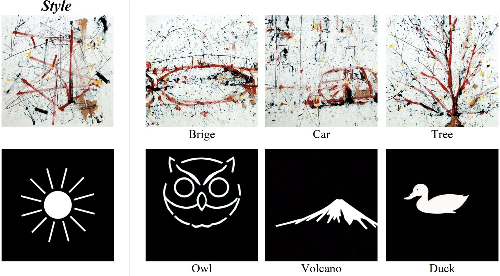
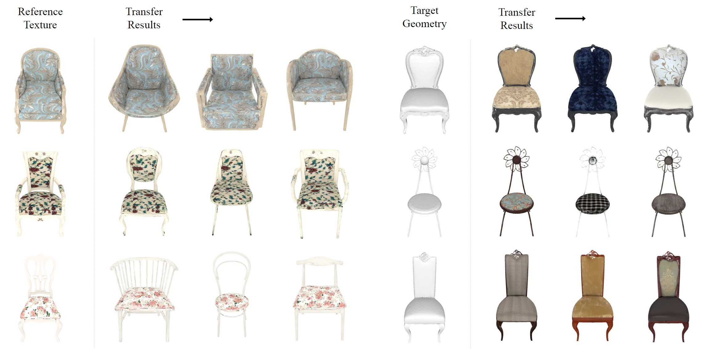
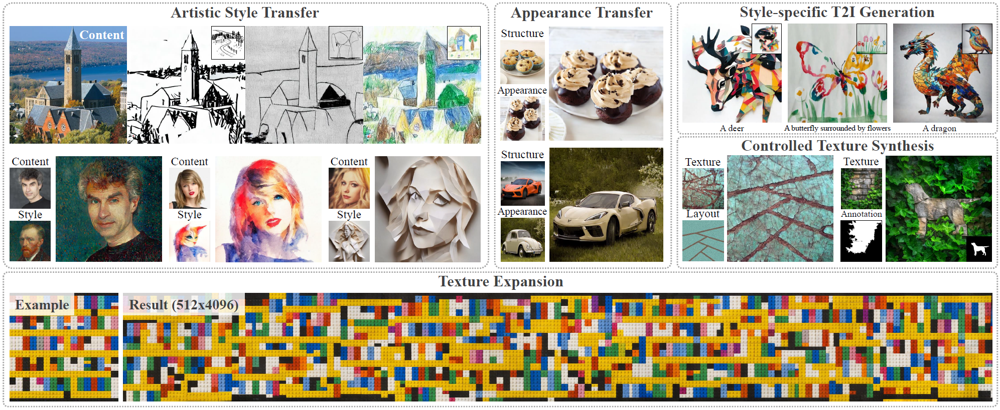
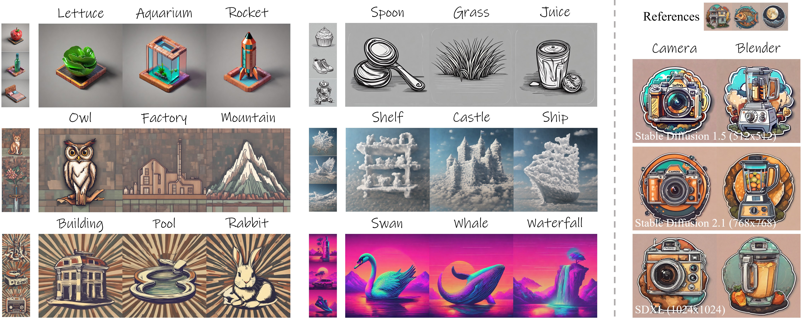
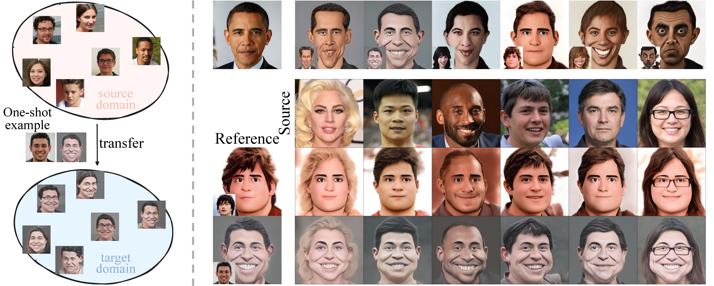

Zichong Chen 陈子冲Master's StudentShenzhen University Email: chenzichong01@gmail.com
|
|
About me
I am currently a third-year (2023-now) Master's student at Visual Computing Reserach Center (VCC), College of Computer Science and Software Engineering, Shenzhen University (SZU), advised by Prof. Yang Zhou. My research interests center on AIGC, Image & Video Generation, Style Transfer, especially customized content generation. I am also interested in personalized large language models.
Education Background
Master's student
2023.09 - 2026.06 (Expected)
VCC, College of Computer Science and Software Engineering, Shenzhen University, China
Internships
Xiaohongshu (RedNote)
Sep. 2025 - Nov. 2025, Beijing, China
Topic: Large Language Models
NetEase Games AI Lab
Apr. 2025 - Jul. 2025, Guangzhou, China
Topic: Image and Video Generation
Publications

Style-Prompting Guidance for Style-Specific Content Creation
Computer Graphics Forum (Proc. Pacific Graphics 2025)

High-Fidelity Texture Transfer Using Multi-Scale Depth-Aware Diffusion
Computer Graphics Forum (Proc. EGSR 2025)

Attention Distillation: A Unified Approach to Visual Characteristics Transfer
CVPR, 2025

StyleBlend: Enhancing Style-Specific Content Creation in Text-to-Image Diffusion Models
Computer Graphics Forum (Proc. Eurographics 2025)

Deformable One-shot Face Stylization via DINO Semantic Guidance
CVPR, 2024
Competitions & Awards
- 2025, 研究生国家奖学金 (The China National Scholarship)
- 2025, 深圳大学硕士学业一等奖学金
- 2024, 第四届计图人工智能挑战赛 三等奖, 第4名
- 2024, 深圳大学硕士学业一等奖学金
- 2023, 深圳大学硕士学业特等奖学金
| © Zichong Chen | Last update: January 2026 |